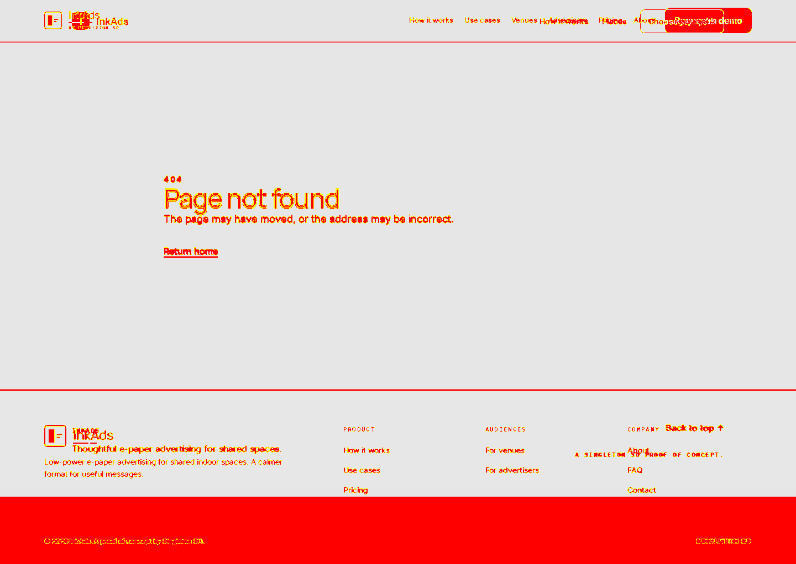
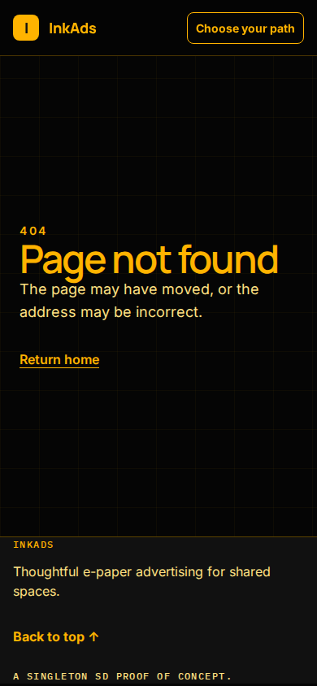
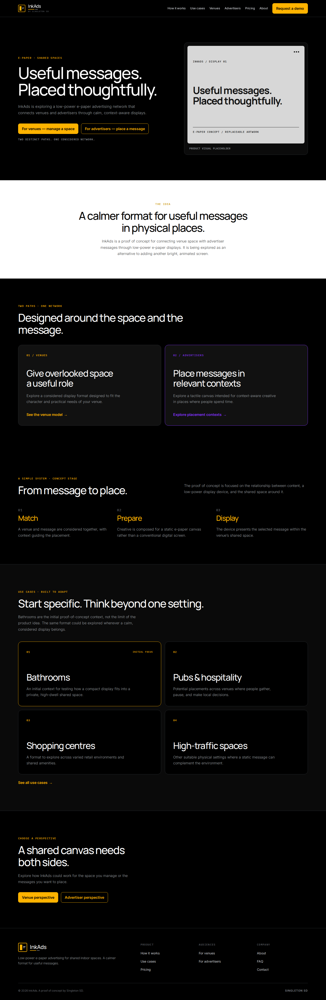
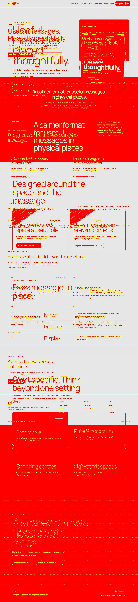
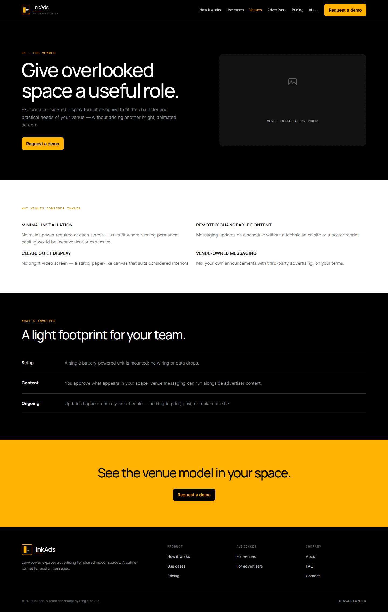

404 · desktop · 203519 px changed



Base = https://inkads.poc.singletonsd.com (pre-PR).
PR = local build for this branch (post-PR).
Diff highlights changed pixels in red.








No base (new route or missing on https://inkads.poc.singletonsd.com)

—
No base (new route or missing on https://inkads.poc.singletonsd.com)

—